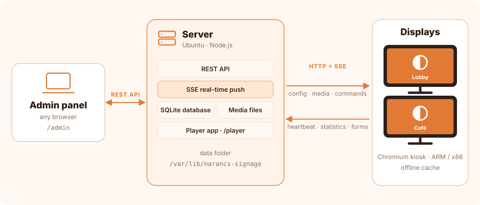

Everything you need to install, run and use Narancs Signage — a complete, self-hosted digital signage system.
Narancs Signage has three parts:
Server — a small Node.js application with an SQLite database. It serves the admin panel, stores your content and media, and pushes changes to the screens in real time.
Admin panel — a web app at /admin/ where you manage screens, playlists, content, branding and alerts.
Player — a web app at /player/ that runs full screen on each display. The player installer turns any Ubuntu Server or Raspberry Pi into a locked-down kiosk that runs it.

Requirements
Part
Requirement
Server
Ubuntu Server 22.04 / 24.04 (amd64 or arm64). 1 CPU core and 1 GB RAM are plenty for dozens of screens; disk space depends on your media. Node.js ≥ 22.13 (the installer sets up Node.js 24).
Display
Ubuntu Server 22.04 / 24.04 or Raspberry Pi OS Lite (arm64, armhf, amd64). Raspberry Pi 4/5 or any mini PC. A monitor or TV over HDMI; a touch screen for interactive content.
Network
The displays must reach the server over HTTP (default port 8080). Weather, RSS and iCal feeds need internet access on the server.
Browser-only
Any modern browser can open /player/ without installing anything (smart TVs, tablets, signage sticks).
Quick start
Install the server on an Ubuntu / Debian machine (or a Mac, without sudo):
Open the admin panel at the address the installer prints (http://SERVER-IP:8080/admin/), choose a language and create your admin account. A default playlist with sample content is created automatically.
From a cloned project folder the same installer runs as sudo ./install/install-server.sh [options].
macOS: run the same command without sudo. It installs Node.js with Homebrew if needed and starts the server at login (LaunchAgent). Data: ~/Library/Application Support/Narancs Signage/data, log: ~/Library/Logs/narancs-signage.log. Other systems: use Docker.
Windows: download and run NarancsSignageSetup.exe (English / Hungarian wizard; it is not code-signed, so SmartScreen may ask: More info → Run anyway). Choose server and display, server only or display only – kiosk PC: a dedicated kiosk account signs in automatically after a restart and Microsoft Edge shows the display full screen (restarted if closed; to get back to Windows: Ctrl+Alt+Del → Sign out). Uninstall from Settings → Apps, the data is kept. The same from PowerShell as Administrator: irm https://raw.githubusercontent.com/mzzg-bazsi/narancs-signage/main/install/install.ps1 | iex. It asks whether to install the server only, the display only (Microsoft Edge full screen at sign-in, showing another server) or both on this PC. The server runs at startup as a scheduled task (if Node.js is missing, it downloads its own copy from nodejs.org); data: C:\ProgramData\NarancsSignage\data, log: C:\ProgramData\NarancsSignage\server.log. Running it again updates the program; add -Uninstall (see the end of the installer output) to remove it, the data is kept. For an unattended display turn on automatic sign-in.
Option
Default
Description
--port
8080
HTTP port of the server.
--data
/var/lib/narancs-signage
Where the database and the media files are stored.
The installer:
installs Node.js 24 from NodeSource if a suitable version is missing,
copies the program to /opt/narancs-signage and creates a signage system user,
creates and starts the narancs-signage systemd service,
installs the signage-backup command and a daily backup at 03:00,
opens the port in the firewall if ufw is active.
Running it again updates the program; your data is kept.
First login
On the first visit the admin panel asks for the language (English or Hungarian) and the first admin account. It also creates a default playlist with sample content (announcement, clock & weather, cards, calendar, interactive menu, feedback form, countdown), so a newly paired screen shows something immediately. You can delete or edit these freely.
Environment variables
The service reads these (set them in the systemd unit, or on the command line when running by hand):
Variable
Default
Description
PORT
8080
HTTP port.
HOST
0.0.0.0
Address to listen on. Use 127.0.0.1 behind a reverse proxy.
SIGNAGE_DATA
./data
Data folder (database + media).
MAX_UPLOAD_MB
2048
Maximum size of a single uploaded file.
SIGNAGE_GALLERY
GitHub gallery
URL of the community template gallery (index.json).
HTTPS and reverse proxy
The server speaks plain HTTP. For HTTPS put a reverse proxy in front of it. With Caddy (automatic certificates):
Or use the docker-compose.yml from the repository: docker compose up -d. To update, pull the new image and recreate the container; the data stays in the volume.
Running without the installer
Any machine with Node.js ≥ 22.13 (macOS, Windows, Linux) can run the server directly — there are no dependencies to install:
cd server
npm run dev
Display installation
On the device connected to the display, run one command. The admin panel shows it ready to copy under Screens → New screen.
Hardware screen rotation. (Software rotation can also be set per screen in the admin panel.)
--gpu / --no-gpu
Force GPU acceleration on or off. By default it is detected: software rendering in virtual machines and without a GPU.
--user NAME
Name of the kiosk user (default: kiosk).
--uninstall
Remove the player (kiosk user, autologin, scripts, boot screen).
--purge
Uninstall and also remove Chromium and the graphics packages.
What it sets up
A minimal X11 environment with no window manager and no desktop, and Chromium in kiosk mode. Chromium is restarted automatically if it crashes.
Automatic login on tty1 with a dedicated kiosk user.
Screen saver and power saving off; the monitor is switched on and off according to the screen's power schedule (DPMS).
A boot screen with the logo and a progress bar instead of console text, also during restarts and shutdown (Plymouth, quiet GRUB).
The signage-agent service, so you can restart the player or reboot the device from the admin panel.
The signage-diag troubleshooting command.
Settings are stored in /etc/narancs-signage/player.conf (server address, device ID, Chromium path, rotation, extra Chromium flags). After editing it, restart the player from the admin panel or reboot.
Pairing
After the reboot the display shows a 6-digit code and the server address. In the admin panel open Screens → New screen, type the code, give the screen a name and pick a playlist. The screen starts playing within seconds. Unpaired devices that have not checked in for 24 hours are removed automatically.
Without installing
Open http://SERVER-IP:8080/player/ in any browser — a smart TV, a tablet in kiosk mode or a signage stick. It shows a pairing code just like an installed player. Remote restart/reboot and the monitor power schedule need the installed player; everything else works the same.
Afterwards delete the screen in the admin panel as well. To reinstall, simply run the install command again.
Raspberry Pi image
Three ready-to-flash images based on the official Raspberry Pi OS Lite (64-bit), for Raspberry Pi 3, 4, 5 and Zero 2 W. On the first start they download and install the latest Narancs Signage release, so they never go out of date.
Image
What runs on the Pi
Server + display (all-in-one)
The server and its own screen. Other displays can be paired to it too.
Display only
The player; it connects to your server, set in narancs-signage.txt.
Server only
The server without a display (for example a Pi in a cupboard); your other screens connect to it. The admin address is shown at the login prompt.
Flashing with Raspberry Pi Imager
In Raspberry Pi Imager open App Options → Content Repository, choose a custom URL and enter:
Choose your device, then Narancs Signage (server + display), (display only) or (server only), then the SD card.
In the customisation step set the host name, user name and password, Wi-Fi and SSH, like for any Raspberry Pi OS.
Display only: after writing, open the bootfs partition (it appears on Mac and Windows too), edit narancs-signage.txt and set SERVER=http://SERVER-IP:8080.
Put the card in the Pi and power it on. The first start needs internet and takes 5–15 minutes; the screen shows the progress, then the device restarts and shows a pairing code.
Server only: after the installation and the restart, open http://PI-IP:8080/admin/ (the address is also shown at the login prompt) and create your account.
Server + display: open the admin address shown on the screen (http://PI-IP:8080/admin/), create your account, and pair the screen with its code under Screens → New screen.
You can also download the .img.xz files from the pi-image release and write them with Use custom or balenaEtcher. Some Imager versions don't offer the customisation step for files selected this way – then use Ethernet, or the content repository above.
Settings in narancs-signage.txt
Setting
Description
SERVER
Display only: address of your server, e.g. http://192.168.1.10:8080 (required).
PORT
Server + display and server only: port of the server and the admin panel (default 8080).
ROTATE
Optional screen rotation: 90, 180 or 270.
NIGHTLY_REBOOT
yes: restart the device every night at 4:30.
The settings are read on the first start. If the installation fails (for example without internet), it is retried at every start; the log is in journalctl -u narancs-firstboot. Later updates work like on any installation: run the installer again.
Admin panel
The admin panel works on desktop and mobile, in light or dark mode. Most changes reach the screens immediately after saving. In editors, Ctrl/⌘ + S saves.
Dashboard
Online screens, number of content items and playlists, touches and form submissions in the last 7 days, an activity chart, the most viewed content, recent submissions, active alerts and storage usage. Buttons to reload or identify all screens.
Dashboard
Screens
Each paired screen is a card showing its status (online/offline), input mode (touch or mouse), what is playing right now, its playlist, resolution and last check-in. Turn on Live preview to see every screen's output live.
Screens with live preview
Control sends commands to the screen:
Command
Effect
Identify
Shows the screen's name in large text for a few seconds — handy to find which physical screen is which.
Previous / Next
Steps the playlist.
Reload
Reloads the player page (picks up player updates).
Clear cache
Deletes the offline cache and reloads.
Restart player
Restarts the Chromium kiosk (installed player only).
Reboot device
Reboots the whole device (installed player only, administrators).
Screenshot
Shows what is on the real display right now, taken by the device agent (installed player only).
Edit opens the screen settings in five tabs:
Tab
Settings
General
Name, default playlist, return to autoplay after touch (seconds of inactivity), virtual keyboard for forms, page with a tap (on by default), tablet mode (on: never show a mouse pointer, touch only; off: the pointer appears while the mouse moves and hides after 3 seconds).
Schedule
Rules that play a different playlist on given days, between given times and optionally between dates — e.g. breakfast menu 7–10 am, different content at weekends. Rules are evaluated in order; the first matching rule wins, otherwise the default playlist plays.
Look
Orientation (landscape, portrait 90°/270°, upside down — rotated in software), corner clock, progress bar, news ticker (one message per line) with speed and colour, a different theme and dark / light mode for this screen, accent colour override.
Power
Scheduled screen off: on/off time and operating days. Outside these hours the screen is black; on an installed player the monitor itself is switched off.
A playlist is an ordered list of content items. Drag rows to reorder them. For each item you can set:
Playlist editor with live preview
duration in seconds (empty = the content's own duration),
an on/off switch to skip it temporarily,
validity dates (from / to) — e.g. a promotion that disappears automatically.
The transition between items can be fade, slide in, zoom, float up or none. The live preview on the right plays the saved playlist exactly as the screens do.
Content types
Under Content you create items once and use them in any number of playlists. Every editor has a live preview. Text and colours can follow the branding: colour fields offer the theme's colours, and Apply branding (in the content editor, or for all content at once on the Branding page) replaces custom colours with the theme's colours, so the content follows later theme changes too.
Type
Main options
🖼️ Image slideshow
Images and videos from the media library, interval, effect (fade, slide, Ken Burns), fit (cover/contain with a blurred background), captions, page dots. Duration 0 = number of images × interval.
🎬 Video
Video file, muted or with sound, fit. Duration 0 = play to the end.
📝 Announcement
Kicker, title, body text, alignment, text size, background colour, gradient, image or video, logo.
🃏 Cards
Title, subtitle, number of columns, cards with icon or image, title, text, badge; a card can open another content item when tapped.
👆 Interactive menu
Touch buttons with icon, label and subtitle that open other content. Back/Home buttons appear automatically; after the inactivity time the screen returns to the playlist.
Calendars to show, view (list, week, month), days ahead, maximum number of events.
🕒 Clock & weather
Digital or analogue clock, seconds, date, current weather and 5-day forecast for a city (Open-Meteo, no API key), title.
📰 News feed
RSS/Atom URL, number of items, seconds per item, images.
⏳ Countdown
Title, target date and time, text shown when it is reached, background.
🔳 QR code
URL or text (Wi-Fi login, menu, website), title, caption. Generated on the screen, no internet needed.
🌐 Website
URL, zoom, interactive or display-only, timed reload. Some sites (Google, Facebook…) block embedding.
📄 PDF
A PDF from the media library and the page to show.
🧩 Custom HTML
Your own HTML/CSS/JS, running in an isolated frame.
🔲 Split screen
Several content items at once in zones. Layouts: sidebar right/left, bottom/top bar, L-shape, two or three columns, 2 × 2 grid; adjustable size of the secondary zone and an optional gap. Each zone rotates one or more existing content items by their own durations — e.g. a slideshow in the main area, clock & weather in the sidebar, a news feed at the bottom.
From a content item you can open its full-screen preview, duplicate it, or see which playlists use it before deleting.
Templates
Under Templates you find ready-made content packs, each with a live preview. Install creates a new playlist with all the content, forms and calendars of the template — in your own branding colours and with your organisation's name. Your existing content is not changed, and you can edit everything afterwards.
Announcement, school events, canteen menu, countdown to the holidays, interactive info menu
🏨 Hotel reception
Guest welcome, services and events next to the weather, Wi-Fi, guest feedback
💪 Gym & fitness
Weekly class schedule (recurring events), memberships, monthly challenge countdown, member app QR
🎤 Conference & event
Welcome, agenda next to the clock, speakers, keynote countdown, Wi-Fi, session rating
🍹 Bar & pub
Happy hour, drinks menu, weekly quiz and live music, match countdown, food menu QR
💇 Salon & beauty
Welcome, services with prices, offer of the month, opening hours, booking QR, feedback
Your own templates: the Export button of any content item or playlist downloads a .narancs.json file. It contains the content, everything it links to (menu and card targets, zones), the structure of forms and the images (up to 40 MB). Form submissions, your own calendar events and iCal links are left out. Import from file on the Templates page loads it into any Narancs Signage system; the file is checked first (known content types, valid links, allowed media types, size limits) and imported in one step — if anything is wrong, nothing is created.
The format is plain JSON ("format": "narancs-template", "version": 1): content refers to each other by names (s1, f1, c1, m1), texts can be bilingual ({"en": "…", "hu": "…"}), and {{org_name}}, {{city}} and {{date+N}} are filled in when importing.
Community gallery
The Community gallery tab on the Templates page lists the templates of the narancs-signage-templates repository — the ten built-in templates plus everything users submit — with live preview, author, license, Install and Download. The server downloads the gallery (it needs internet access) and caches it for 10 minutes. Set SIGNAGE_GALLERY to use your own gallery.
Template language: the selector at the top of the Templates page decides the language of the previews and of the installed content for bilingual templates, and the gallery shows the templates available in that language.
Submitting a template:
Open a content item or playlist → Export → give it a name, description and category → Submit to the gallery. The file is downloaded and the gallery's submission form opens on GitHub (a free GitHub account is needed).
Drag the downloaded .narancs.json file into the Template file box, choose the languages and the license (CC0 or CC BY), and send the form.
A bot checks the template with the same validation Narancs Signage uses and replies in a comment: either a pull request is opened, or it explains what to fix (edit the issue and it is checked again).
After review the template appears in every Narancs Signage admin panel.
Media library
Upload images (JPG, PNG, WebP, GIF), videos (MP4, WebM) and PDFs by drag and drop. The maximum file size is 2 GB by default (MAX_UPLOAD_MB). Each file has a direct link; the players download and cache them for offline use.
Calendars
Create calendars with a colour (a theme colour or one of the predefined colours) and add events by hand, or import a Google / Outlook / any iCal (.ics) link. Imported calendars refresh every 15 minutes, or immediately with Refresh. All-day events are supported. Recurring events work both ways: imported calendars expand their repeat rules (daily, weekly, monthly — e.g. “last Friday of the month” —, yearly, with skipped and moved occurrences), and your own events can repeat daily, weekly, monthly or yearly with an optional end date.
Forms
Build touch-screen forms for surveys, sign-ups or guest registration. Start from a template (satisfaction survey, contact request, guest registration) or from scratch.
Field types: short text, long text, e-mail, phone number, number, drop-down, choice buttons, checkbox, star rating, satisfaction smileys. Each field can be required. On the screen a virtual keyboard (English or Hungarian layout) appears for text fields if enabled for the screen.
Submissions appear under the form, with the screen they came from; export them as CSV.
Branding
Theme — 10 built-in themes (Orange, Ocean, Forest, Midnight purple, Burgundy, Black & gold, Neon, Clean light, Corporate blue, Pastel). Each sets colours, fonts and corner rounding, and every theme has a dark and a light mode (the Mode switch above the themes). You can then override any colour, the text and heading fonts and the rounding.
My themes — Save as my theme keeps the current colours, fonts and shape as your own theme (with both modes). Each own theme can be exported to a file to share it, and Import loads a theme file someone else made. Imported files are checked: only colour values and known font names are accepted.
Organisation, logo and titles — organisation name, slogan, logo (transparent PNG or SVG recommended), logo watermark in a corner with size and opacity.
Header bar — logo, title, subtitle and clock at the top of every screen, above all content.
Colour the content — new content uses the theme colours by default; Apply branding to all content converts older content with custom colours. Images and videos are not changed.
Changes show immediately in the preview and reach the screens after saving. A screen can use a different theme or mode (Screens → Edit → Look); the logo and header stay global.
The settings are grouped into tabs – Theme, Logo & name, Header, Fine-tuning and Recolour – while the live preview stays visible next to them.
Branding: 10 themes with live preview
Emergency alerts
Show an instant full-screen message on all screens or selected ones. Set a title, message, level (info, warning, danger, success) and an expiry in minutes (or none). Templates: fire alarm, evacuation, short break, congratulations. Active alerts are listed with a button to end them; screens show the alert until it expires or is ended.
Emergency alert with templates
Reports (proof of play)
Under Reports you see what played where and how many times: views and touches for a date range (7 days, 30 days, this month or any dates) and optionally one screen, a daily chart, and rankings by content and by screen. Download CSV exports every event (time, screen, content, type, view/touch) — for example for advertisers. The displays record every content view and every touch; data is kept for 90 days.
Sees everything, changes nothing (only their own password).
API keys (Settings → API keys) let other systems — Home Assistant, Zapier, a script — call the API with their own role: send Authorization: Bearer ns_…. The key is shown only once when it is created; the server stores only its hash, and you can revoke it at any time. Example — send an emergency alert:
curl -X POST http://SERVER-IP:8080/api/alerts \
-H "Authorization: Bearer ns_…" -H "Content-Type: application/json" \
-d '{"title":"Fire alarm","message":"Leave the building","level":"danger","minutes":30}'
Settings
The page has three tabs: General, Users and API and System.
Language of the admin panel, the screens and the server messages (English or Hungarian).
Password change, users with roles and API keys (administrators).
Network (Raspberry Pi): only when the server runs on a Raspberry Pi – switch between automatic address (DHCP) and a static IP address (address with prefix, e.g. 192.168.1.50/24, gateway, DNS). After applying, the admin panel is at the new address. If you lock yourself out, run sudo signage-network dhcp on the device. On a Pi installed before v1.21.0, run the server installer again to enable it.
Sample content: recreate the default sample playlist.
Backup: download the database; for a full backup with media files run sudo signage-backup on the server (it also runs every day).
System: what the server runs on (Docker container, Raspberry Pi with its model, virtual machine, Mac or bare metal), installation type, operating system, host name, processor and load, memory, temperature (Raspberry Pi), free disk space, data folder, database size, server and machine uptime, player address, reload all screens.
Updates (separate card): version and Check for updates. If there is a newer version, its release notes are shown right on the card – for every version you skipped. If a new version is available, the server installed with the installer (Ubuntu/Debian, Raspberry Pi) updates itself with Update now – it restarts, then the screens reload. With Docker or on a Mac the matching command is shown. The button appears after installing v1.22.0 or later with the installer; from the command line: sudo signage-update.
Split screen: meetings next to the clockInteractive touch menu
Startup: boot screen with progress bar → loading screen → content. If the server cannot be reached, a status screen explains why and keeps retrying.
Offline: the configuration and all media are cached. If the server or the network goes down, the screen keeps playing and shows a small “Offline – cached content” label.
Real-time updates: saved changes, alerts and commands arrive within seconds over Server-Sent Events.
Touch: interactive content (menus, cards, forms) reacts to touch; after the inactivity time set for the screen, playback continues.
Paging by touch: tap the left edge of the screen for the previous item and the right edge for the next one (rotated screens follow the content's left and right). On menus, forms and interactive web pages arrow buttons appear in the bottom corners instead, so a tap meant for a button never turns the page. Autoplay continues after the usual inactivity time.
Mouse: in non-tablet mode the pointer is visible while the mouse moves and hides after 3 seconds.
Keyboard: → next, ← previous, I identify.
Statistics: views and touches are reported to the dashboard.
Operations
Task
Command
Status
systemctl status narancs-signage
Logs
journalctl -u narancs-signage -f
Restart
sudo systemctl restart narancs-signage
Manual backup
sudo signage-backup
Reset a password
sudo signage-reset-password USERNAME (add --admin to make the user an administrator)
Every night at 03:00 signage-backup writes a complete backup (database snapshot + media) to /var/backups/narancs-signage/signage-DATE.tar.gz and keeps the last 14. The admin panel can also download the database alone.
Player (browser) changes reach the screens with a Reload command from the admin panel. Changes to the kiosk itself (boot screen, agent, Chromium flags) need the player installer to be run again on the device; it keeps the device ID and pairing.
Troubleshooting
On a display, sudo signage-diag prints the server address, device ID, whether the server is reachable, the pairing state, the graphics setup and the last lines of the X log. The same report can be requested remotely with the diag command of the API; the result is stored in the screen's info.diag field.
The display shows no pairing code
Check the network and the server address with sudo signage-diag. The player keeps retrying and shows a status screen after a few failed attempts. If the server address is wrong, run the installer again with the right address.
Black or single-colour screen in a virtual machine
3D acceleration in some VMs (e.g. virgl in UTM/QEMU) does not reach the display. The installer detects VMs and uses software rendering; you can force it with --no-gpu.
The screen is “Offline” in the admin panel
The device has not checked in for 90 seconds. It still plays cached content. Check its network and power; when it reconnects, it updates automatically.
A website does not appear
Many sites forbid being embedded in a frame (X-Frame-Options / CSP). Use a page that allows embedding, a dashboard's “kiosk” or “embed” link, or a screenshot.
Video plays without sound
The installed player allows autoplay with sound. In a regular browser the browser may mute it until someone interacts with the page.
The mouse pointer never appears
Tablet mode is on for the screen (Screens → Edit → General). Turn it off to show the pointer while the mouse moves.
Emojis look like outlines
The player puts every emoji in a colour emoji font. Re-run the player installer so the font package is installed.
I forgot the admin password
On the server run sudo signage-reset-password USERNAME. It prints a new password and signs the user out everywhere. Without a username it lists the users. With Docker: docker exec -it narancs-signage node src/reset-password.js USERNAME.
API reference
The admin panel uses a JSON REST API. Authentication is a session cookie (POST /api/auth/login) — state-changing requests must also send the header X-Signage: 1 (CSRF protection) — or an API key as Authorization: Bearer ns_…. Errors return { "error": "message" } with a 4xx/5xx status.
Endpoint
Description
POST /api/auth/login · /logout · GET /api/auth/state
GET /api/gallery · POST /api/gallery/:id/install · GET /api/gallery/:id/download
Community gallery: list (?lang=), install ({ lang }), download. Preview: /player/?preview=gallery:ID&lang=hu.
The player uses the public /api/player/* endpoints (hello, config, stream, heartbeat, forms, weather, rss), identified by its device ID.
FAQ and license
How was it built?
Narancs Signage was programmed entirely by Claude, Anthropic's AI model, using Claude Code: every line of the server, the admin panel, the player, the installers, this website and this documentation. The ideas, the requirements and the testing on real hardware came from Balázs Mazzag. Every change is tested and versioned like in any other project.
Is it free?
Yes. You may use, modify and share it free of charge, also for business purposes. Only the author may sell the software; charging for installation, operation or content creation is allowed. Keep the license file and the copyright notice in the admin panel. See the Narancs Signage License.
Does it need the cloud or an account?
No. Everything runs on your own server; only the weather, RSS and iCal features fetch data from the internet.
How many screens can it handle?
The server is lightweight; dozens of screens on a small machine are no problem. Media are cached on the screens, so traffic is mostly small updates.
Where can I report a bug or ask for a feature?
Open an issue on GitHub. The changes of each version are listed in the changelog.